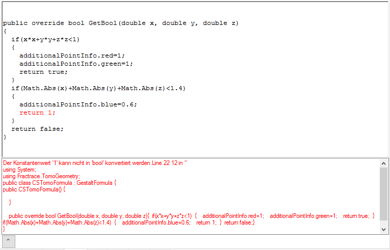

To compile the formula source with the C# or vb.net compiler, you have to activate the small rendering control (the left square in the top control). Syntax errors are displayed in a subframe (here a german error message) and the line with the first error is displayed red.
